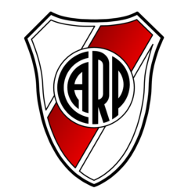

River Plate
O River Plate deixou milhares de clubes para trás e se firmou como um dos maiores times do mundo. E por seus próprios méritos, afinal, poucas são as agremiações que brigam em seu nível de conquistas e história. Ao longo dos seus 120 anos, El Millonario fez valer cada gota de suor e escreveu o seu nome com taças (52 – contando quatro Libertadores, um Mundial etc.) nos livros esportivos da América do Sul.